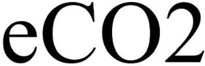

Trade Mark Journal No.2025/046 14 November 2025
WO0000001883709 (10)
Office of origin: Republic of Korea
Date of International Registration:16 September 2025
Date of designation in the UK:
16 September 2025

International priority date claimed: 4 April 2025
(Republic of Korea)
(4020250055695)
- Class 10
- Light-based medical devices for treatment of skin; laser apparatus for medical treatment of the skin, face, and body; laser apparatus for surgical treatment of the skin, face, and body; laser apparatus for dermatological treatment of the skin, face, and body; laser apparatus for plastic surgery of the skin, face, and body; laser apparatus for cosmetic treatment of the skin, face, and body; medical instruments incorporating laser diode for medical treatment of the skin, face, and body; medical instruments incorporating laser diode for surgical treatment of the skin, face, and body; medical instruments incorporating laser diode for dermatological treatment of the skin, face, and body; medical instruments incorporating laser diode for plastic surgery of the skin, face, and body; medical instruments incorporating laser diode for cosmetic treatment of the skin, face, and body; light emitting diode devices for medical treatment of the skin, face, and body; light emitting diode devices for surgical treatment of the skin, face, and body; light emitting diode devices for dermatological treatment of the skin, face, and body; light emitting diode devices for plastic surgery of the skin, face, and body; light emitting diode devices for cosmetic treatment of the skin, face, and body; light emitting diode devices for increasing human body's own production of collagen; Intense Pulse Light (IPL) apparatus for medical treatment of the skin, face, and body, namely, light based devices providing mainly pulsed light for performing aesthetic skin treatment procedures; Intense Pulse Light (IPL) apparatus for surgical treatment of the skin, face, and body, namely, light based devices providing mainly pulsed light for performing aesthetic skin treatment procedures; Intense Pulse Light (IPL) apparatus for dermatological treatment of the skin, face, and body, namely, light based devices providing mainly pulsed light for performing aesthetic skin treatment procedures; Intense Pulse Light (IPL) apparatus for plastic surgery of the skin, face, and body, namely, light based devices providing mainly pulsed light for performing aesthetic skin treatment procedures; Intense Pulse Light (IPL) apparatus for cosmetic treatment of the skin, face, and body, namely, light based devices providing mainly pulsed light for performing aesthetic skin treatment procedures; light-based medical devices for treatment of skin, namely, medical laser devices for increasing human body's own production of collagen and for ablation, vaporization, resurfacing, and coagulation of soft tissue; light-based medical devices for treatment of skin, namely, medical laser devices for increasing human body's own production of collagen and used in procedures to treat melasma, striae, scars, acne scars, surgical scars, hypertrophic scars, wrinkles, rhytides, furrows, fine lines, textural irregularities, benign pigmented lesions, vascular lesions, epidermal nevi, actinic cheilitis, keloids, verrucae, skin tags, anal tags, keratoses, tattoos, and in procedures for debulking benign tumors, debulking cysts and treating superficial skin lesions; laser instruments for medical use; medical laser for skin treatment; medical apparatus and instruments for the treatment of skin.
Lutronic Corporation
Representative: WOO Jong Kyun, Jeongdong Building, 17F,, 21-15, Jeongdong-gil, Jung-gu, Seoul 04518, REPUBLIC OF KOREA